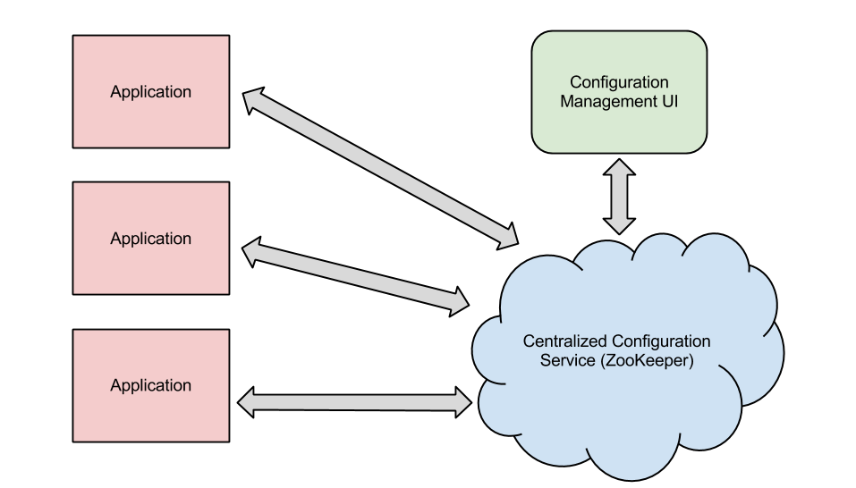
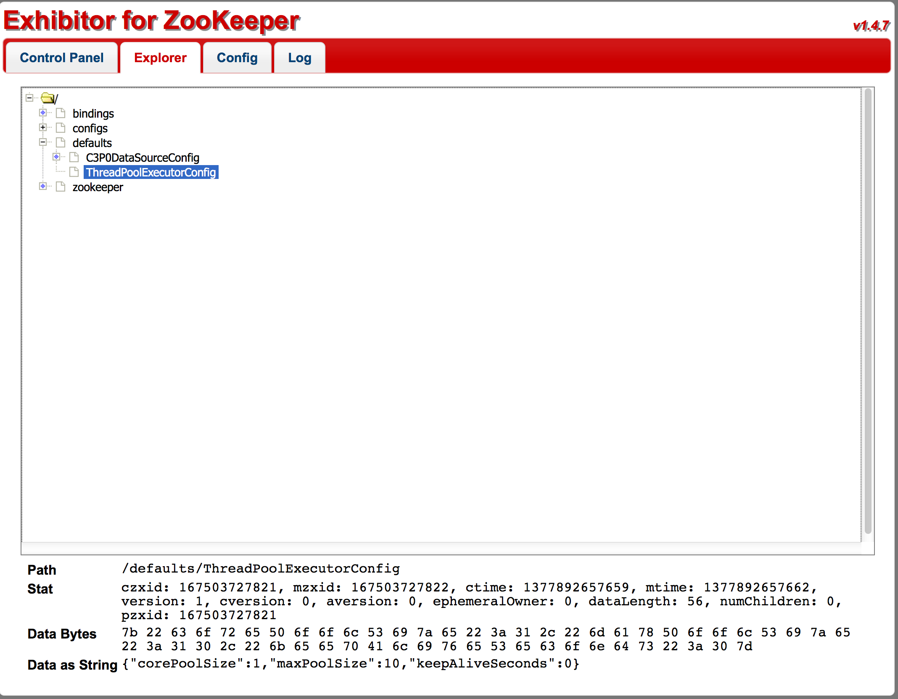
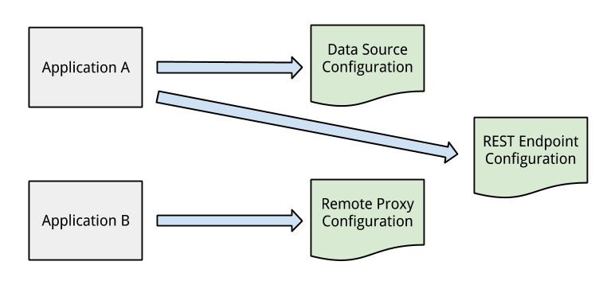
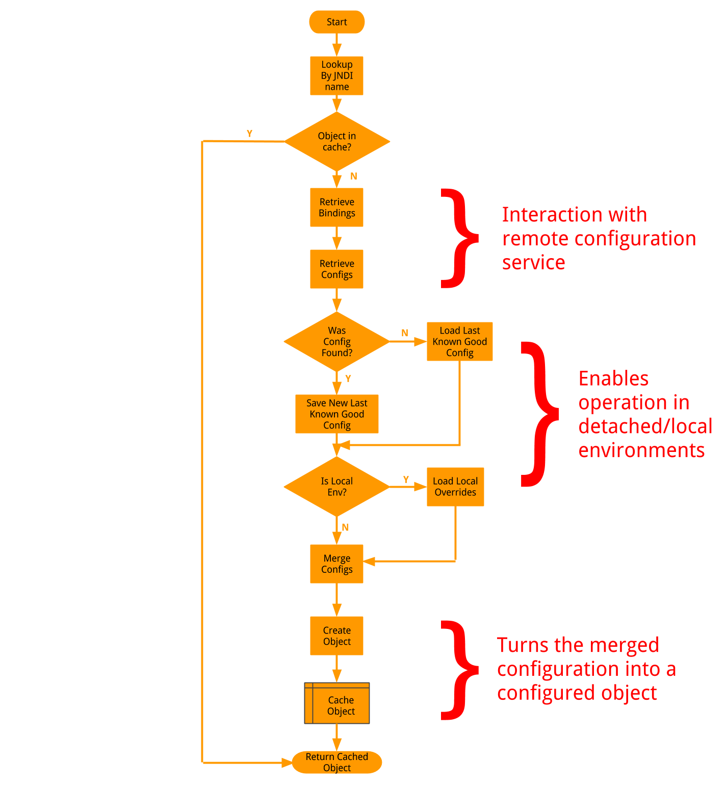

Centralized Configuration with Apache ZooKeeper
Jonathan Pearlin
Technical Lead
- Welcome
- I'm here to talk about a centralized configuration solution that we built @ Dealer.com here in Burlington
- In this talk, I am going to talk about our rationale for building this service, as well as the technical details behind it
- But, before we start, let me introduce myself a bit
about me
- Technical Lead @ Dealer.com
- 10+ years of Java development experience
- Contributor to the Grails Framework
- Lived in MA, VA, CA and VT

- If only this were true...
- Configuration is a necessity of non-trivial applications, especially in an enterprise software environment.
- The more complex the system or the more complex the environment, the more critical configuration becomes.
- However, despite being critical to the success of software development, configuration is often something that is hard to get right.
problem
I want to configure my application
- I think that we can all relate to this problem
- Applications start out simple, but eventually we need to be able to change values at runtime based on factors such as environment or which server they run on, etc
problem
I want to make configuration changes to my application without re-deploying
- I should be able to make a configuration change and either restart my application or have it pick it up at runtime
- Things can go wrong if I need to re-build and re-deploy just for a configuration change
problem
I want to be able to spin up a new instance of an application without having to duplicate its configuration
- I should be able to spin up a new VM and install my application without worrying about making sure I got the configuration right for the target environment
- I really want to avoid mistakes made when copying configuration between applications
problem
I want configuration consistency between application instances and different applications
- Just like with the previous problem, I want to avoid copy and paste mistakes
- Hopefully eliminate communication mistakes where one app owner has to tell another what to put in their configuration
problem
I want to avoid plain-text passwords in my configuration files
- Because friends don’t let friends store plain-text passwords in configuration files checked into source control.
our solution
centralized, hierarchical configuration management organized by environment, data center and application
- Configuration stored in one, centralized location
- No longer stored in each application’s source repository
- Configuration layered in a hierarchical fashion to allow for overrides of values in specific cases
- Hierarchy is based on environment, data center and/or application identification criteria (name, host, port, version)
our solution
- Store configuration in a centralize location accessible by all applications
- Apache ZooKeeper provides us with both a centralized service AND hierarchical data storage
ummmm...that's it?
- No!
- We will dig into the actual solution in a bit, but first, let's take a look at Apache ZooKeeper and some of the related tools that we used as a foundation for our solution
Apache ZooKeeper
“ZooKeeper is a centralized service for maintaining configuration information, naming, providing distributed synchronization, and providing group services.”

http://zookeeper.apache.org
- An open-source server which enables highly reliable distributed coordination
- Originally created to provide orchestration between Apache Hadoop instances
- Grown to focus on providing the items listed in the definition for any distributed system
Apache ZooKeeper
replicated servers that are organized into an “ensemble”

http://zookeeper.apache.org/doc/trunk/zookeeperOver.html#sc_designGoals
- The ensemble maintains an in-memory image of state
- Transaction logs and snapshots of data are persisted to disk
- The ensemble uses an election algorithm to anoint a leader
- Leader is responsible for handling all “write” requests
- With 2n + 1 members, can withstand n failures
- Recommended that you have at least 5 members in the ensemble, minimum is 3
- Clients can connect to any member of the ensemble
- Writes are routed to the “leader”
Apache ZooKeeper
data model uses hierarchical name spacing

http://zookeeper.apache.org/doc/trunk/zookeeperOver.html#sc_dataModelNameSpace
- Nodes are called “znodes”
- Similar to a traditional file system
- Key difference is that a node can be both a file and a directory (i.e. byte data can be stored at any node, even if it has sub-nodes)
- ZK also keeps metadata about each node, called “statistics” (created timestamp, edited timestamp, version, etc)
- Data is kept in-memory
- This is how ZK achieves high throughput and low latency numbers
- Changes to nodes can be “watched”, which allows for your application to be notified when data changes at a certain path.
Apache ZooKeeper
other guarantees:
- Updates are applied in order
- No partial write results
- Consistent view of system data within ensemble
- Eventual consistency of updates between clients
- ZK manages the consistency of your data for you so you don't have to worry about it
- This is just a small portion of what ZK provides with regards to orchestration and distributed state management
Apache ZooKeeper
supports the following client authentication schemes “out of the box”:
- Digest
- IP (whitelist/blacklist)
- SASL
- “Pluggable” authentication support - can create custom implementations
- Enabled via the ZooKeeper configuration file or system properties
- Multiple client authentication mechanisms can be enabled (will be applied in order defined by configuration)
Apache ZooKeeper
access to znodes can be controlled with applied ACL’s
- CREATE: you can create a child node
- READ: you can get data from a node and list its children.
- WRITE: you can set data for a node
- DELETE: you can delete a child node
- ADMIN: you can set permissions
- Similar to UNIX file access permissions
- Key differences:
- ACL is not limited by scope, as no one “owns” a znode. Instead, it is tied to the authenticated user
- ACL’s are not recursive (i.e. it does not apply to any children of the znode -- must be set manually on each child)
- Key differences:
- ACL’s can be assigned at the time of creating a znode or at any point afterwards, as long as the authenticated user has “ADMIN” ACL
Apache ZooKeeper
ships with Java, C, Perl and Python client bindings
information on additional bindings can be found at:
https://cwiki.apache.org/confluence/display/ZOOKEEPER/ZKClientBindings
information on additional bindings can be found at:
https://cwiki.apache.org/confluence/display/ZOOKEEPER/ZKClientBindings
- Additional bindings include:
- Scala
- C#
- Node.JS
- Erlang
- Haskell
- Ruby
- Go
- Lua
Apache Curator
the “better” Java ZooKeeper client
- “Fluent”-style syntax:
client.create().forPath("/head", new byte[0]);client.delete().inBackground().forPath("/head");client.create().withMode(CreateMode.EPHEMERAL_SEQUENTIAL).forPath("/head/child", new byte[0]);client.getData().watched().inBackground().forPath("/test"); - http://curator.incubator.apache.org/index.html
- A “curator” is a keeper or custodian of a museum or other collection (in other words, a zoo keeper’s boss)
- Originally created by Netflix, open sourced and given to the Apache Software Foundation to sheppard
- The Curator project also includes “recipes” for common operations/uses of ZooKeeper (i.e. distributed locking, etc)
- Much easier to use than the raw Java client driver, thanks to its fluent style
- In practice, we found it much easier to deal with exceptions/errors and to get statistics back from znodes
reading data from ZK with Curator
client.create().withACL(new Acl(ZooDefs.Perms.READ,
ZooDefs.Ids.ANYONE_ID_UNSAFE)).forPath("/path/in/zk",
"some data".getBytes());
if(client.checkExists().forPath("/path/in/zk") != null) {
final byte[] bindingData = client.getData().forPath("/path/in/zk");
}
- Parent directories must exist when creating a znode
- ACL's can be set at creation time or later after a node has been created
- Data is retrieved by path
- Data is stored in ZK as raw bytes
writing data to ZK with Curator
if(client.checkExists().forPath("/path/in/zk") != null) {
client.setData().forPath("/path/in/zk", "new data".getBytes());
}
- Just like with reading, path must exist before writing data to an existing node
watching data changes in ZK with Curator
class WatcherImpl implements CuratorWatcher {
@Override
public void process(WatchedEvent event) {
System.out.println("Processing event for path " +
event.getPath() + "...");
}
}
client.getData().usingWatcher(new WatcherImpl())
.forPath("/some/zk/path");
- Custom watcher gets called when an event happens at the path specified
- Events include node created, node deleted, node data changed or node children changed
Exhibitor
a Java-based supervisory system for ZooKeeper that provides:
Code available @ https://github.com/Netflix/exhibitor
- current state of a ZooKeeper server instance
- periodic backups of data/transactions
- periodic cleaning of ZooKeeper logs
- UI for exploring znodes
- REST API for all of the above
Code available @ https://github.com/Netflix/exhibitor
- Created by Netflix
- Web-based UI for managing a ZooKeeper instance
- Installed on each ZooKeeper server in your ensemble
- Uses REST interface to talk between Exhibitor instances
- Can be used to manage the ZooKeeper configuration files pushed to each instance in the ensemble
- Verify useful for viewing a read-only copy of the data stored in the znodes
Exhibitor
- Example of the znode tree view in the Exhibitor UI
- very useful for looking at both the state of your ensemble and what data is currently stored in ZK
what we made
- Now that we have an overview of ZooKeeper, Curator and Exhibitor, let’s take a look at exactly what we built on top of it
- Our solution is simple at its core: applications request configuration from the centralized service (ZooKeeper)
- Let's start by discussing some of the concepts behind the solution
definition
con·fig·u·ra·tion - a collection of properties that define a resource used by an application at runtime
- For instance, the properties that defines the values used by a data source, such as connection url, username, password, etc.
- These properties are grouped together to define the configuration of that data source -- no need to look them up one at a time.
configuration
stored as JSON documents at each znode in ZooKeeper
{
"@type": <POJO class used for serialization to/from JSON>,
"@creator": <The creator class type responsible for converting
config into object>,
"username": <the username>,
"password": <the password>,
...
}
- Descriptive format
- More compact than XML/less verbose than XML
- Able to take advantage of JSON parsing libraries to work with data at runtime
- JavaScript friendly -- better fit for use in our UI
- We'll talk more in a bit about the @type and @creator metadata fields in this example
ZooKeeper does the heavy lifting
leverages the directory-like structure of znodes to store hierarchical data:
- configs
- jdbc
- my-datasource
- development
- dc-east
- test
- dc-west
- production
- dc-east
- dc-west
- development
- my-datasource
- jdbc
- Data stored in each znode may be a full configuration document or partial configuration document
- Child nodes “override” parent nodes
- JSON stored at a child node may include new properties or may re-define a property defined in a parent node
- If the property is not defined in the child node, the value is inherited from the parent node
- Prevents duplication of data -- only enter values needed for that specific node
- znode paths include the configuration type, name, environment, and data center
- type and name are required, others are optional and only needed if there is specific configuration available for those cases
- Example of this would be to have a different hostname property at different levels in the path, based on environment
lookup
request configuration by using the most-specific path available:
/configs/{category}/{name}/{environment}/{data center}
- Potential full path is always used when requesting configuration
- Solution walks the path starting at the first node
- data stored at the node is put in an accumulator
- if the next node exists, its data is added to the accumulator, overriding any duplicate entries
- process repeats until all nodes are visited or a node does not exist from the requested path
- There's a problem with this approach: applications have to be aware of exactly which node in the tree that they want to request
the "a-ha" moment
separate the configuration definition from its association with an application instance

- Keep an additional set of data in ZooKeeper that tracks exactly which specific configuration nodes are bound to the particular application
- Allows for different sets of configurations to be used based on application identification data provided at look up time
- Added bonus: we have a way to determine exactly which applications are impacted by a configuration change, what downstream services an application relies on etc
- This information is critical to ensuring the safety of changes to the system
definition
bind·ing - an association between an application and a specific configuration
- Multiple applications may consume the same configuration -- no need to duplicate the configuration data
- Duplication of data causes mistakes
binding
stored as JSON documents at each znode in ZooKeeper
"jdbc/rw-database" : {
"configPath" : "my-rw-datasource"
}
- Similar concept to how configurations are stored, with regards to the hierarchy and override strategy
- The “name” of the binding is what the application will use to lookup the configuration (more on this in a minute)
- The “configPath” property is a pointer to the node in the configuration tree that we want to associate with the application
- Path may be relative or absolute. Relative paths assuming the base path used to find the binding as the path to find the configuration.
ZooKeeper does more heavy lifting
leverages the directory-like structure of znodes to store hierarchical data:
- bindings
- development
- dc-east
- my-application
- server1
- my-application
- dc-east
- test
- dc-west
- my-application
- dc-west
- production
- dc-east
- my-application
- <1.2.3
- my-application
- dc-west
- my-application
- dc-east
- development
- Data stored in each znode may be a full collection of bindings or partial set of bindings
- Child nodes “override” parent nodes
- znode paths must include the environment, data center and application name
- additional nodes include hostname, port and/or version (or combinations thereof)
- allows for special cases where custom configuration is needed for a sub-set of servers, versions, etc, such as A-B testing
lookup (reprise)
request the application's bindings:
/bindings/{environment}/{data center}/{app name}/{hostname|port|version}
- Application uses its identifying data to request the collection of bindings stored in ZooKeeper
- IMPORTANT: application code never directly requests a configuration.
- An application knows about itself (i.e. its name, hostname, port and version) and can use that data to find out which configurations it is bound to
- Binding tree is walked top-down just like with configuration and stops when it visits all nodes or finds a node in the request path that does not exist
- Bindings are merged just like configurations to take into account overrides
another "a-ha" moment
create objects from retrieved, merged configuration:
javax.sql.DataSource dataSource = (javax.sql.DataSource)
ConfigProvider.INSTANCE.lookup("jdbc/my-data-source);
javax.mail.Session session = (javax.mail.Session)
ConfigProvider.INSTANCE.lookup("mail/my-smtp-server);
- Allows the framework to enforce standards/conventions with regards to implementations/libraries used to consume other services in our enterprise
- Abstracts all of the details of how the configuration is stored and retrieved so the application doesn't know/doesn't care
- Standardized on a well-known Java API - JNDI
- Makes the framework more flexible and able to modify the underlying implemntation
- We saw some of this in action on earlier slides - remember the @type and @creator meta tags and the "name" portion of the binding?
the request
- request looks like a normal JNDI lookup from the application's perspective
- we keep an in-memory cache of created objects to speed up repeated lookup requests
- bindings are retrieved based on the application's identifying information
- retrieved bindings are scanned for an entry whose "name" property matches the lookup string provided by the application
- if a match is found, the configuration data is retrieved and merged into a single map and cached on disk as a fail safe
- this fail-safe is used if during a future request, the service cannot be reached (offline/detached mode)
- the merged configuration contains the creator that should be used. the configuration is passed to the matching creator
- a configured object is cached and returned to the application, which is none the wiser to the fact that configuration was remotely retrieved
the request in code
public Object lookup(String name) {
final Context context = new Context(lookupName);
final List<Command> commands = new ArrayList<Command>();
//convert application ID info into a ZK path
commands.add(new BindingPathCommand());
//retrieve binding set from ZK using binding path
commands.add(new BindingCommand());
//retrieve the config from ZK based on the data in the binding set
commands.add(new ConfigCommand());
final Chain chain = new ChainBase(commands);
chain.execute(context);
return ObjectFactory.create(context.getConfig());
}
- chain of responsiblity pattern
- allows for easy interjection of steps as the algorithm evolves
- result of executing the chain is the merged configuration
- merged configuration is passed to object creator defined in the configuration
- final result is an object created from the merged configuration
protect the cookie jar
- SASL authentication
- ACL's applied to znodes
- encryption of sensitive data
- Centralizing our configuration data requires that we be smart about who has access to what
- Need to make sure that non-production code does not have access to production systems through configuration, etc
- make use of built-in authentication provider and ACL support discussed earlier
- SASL auth provider used to identify type of client (application or management)
- applications have read-only access to ZK data through ACL enforcement
- tree path traversal restricted by ACL enforcement (dev apps can only read from dev tree, etc)
- password fields in JSON data stored in ZK is encrypted at rest and decrypted upon request
problem
✓ I want to configure my application
- We did one better: someone else configured it...you simply just connected to the service and got what you needed
problem
✓ I want to make configuration changes to my application without re-deploying
- The configuration is no longer kept within the application.
- A simple restart will re-request the created, configured objects from ZK
- Future expansion - use the "watch" functionality of ZooKeeper to be notified when data changes
problem
✓ I want to be able to spin up a new instance of an application without having to duplicate its configuration
- If the bindings are the same, nothing has to be done for this to work.
- You can always define a new, specific binding set if required, but that should be the exception, not the rule
problem
✓ I want configuration consistency between application instances and different applications
- Separation of configuration definitions from application bindings allows for one common configuration to be shared among applications WITHOUT having to copy and paste into each application's configuration files.
problem
✓ I want to avoid plain-text passwords in my configuration files
- Passwords are now stored in the remote configuration data in ZooKeeper, and can be encrypted and protected by ACL's
summary
- hierarchical
- distributed
- scalable
- secured
- tolerant
- code doesn't really do that much -- power is in how the data is stored in ZK
- power of inheritence reduces the copy and paste pasta of configurations
- use ZK for what it does well -- data storage, consistency, distribution and fault tolerance
- enforce good habits, such as access control and data encryption
other thoughs
possible extensions
- deployment data
- dependency detection
- risk calculation and outage impact
- store deployment information side-by-side with bindings
- scan binding data to map out dependencies in your enterprise
- determine the risk of a deployment based on the number of systems that depend on the application
- when something goes down, quickly determine the reach of the outage with regards to dependencies
additional reading
Distributed apps with ZooKeeper - http://blog.cloudera.com/blog/2013/02/how-to-use-apache-zookeeper-to-build-distributed-apps-and-why/
Exhibitor @ Netflix - http://techblog.netflix.com/2012/04/introducing-exhibitor-supervisor-system.html
ZooKeeper @ Zynga - http://code.zynga.com/2011/08/updating-thousands-of-configuration-files-in-under-a-second/
Jones - https://github.com/mwhooker/jones
Exhibitor @ Netflix - http://techblog.netflix.com/2012/04/introducing-exhibitor-supervisor-system.html
ZooKeeper @ Zynga - http://code.zynga.com/2011/08/updating-thousands-of-configuration-files-in-under-a-second/
Jones - https://github.com/mwhooker/jones
Presentation @ http://tinyurl.com/o4fdgsk
Contact Me @ jonathan.pearlin at dealer.com
Contact Me @ jonathan.pearlin at dealer.com